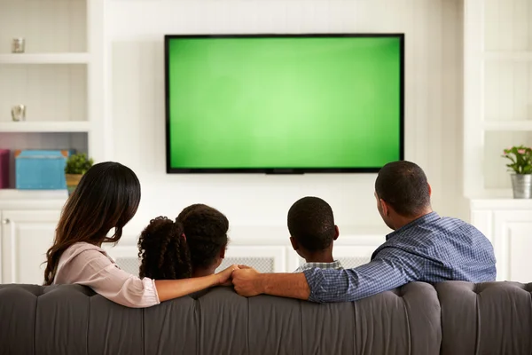
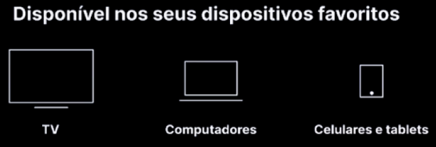

Assista agora exclusivamente no globoplay com acesso antecipado.
Assine agora por R$30,99
Assistir Globoplay
Descubra o que causou sua personalidade, gostos e objetivos em sua infância
Assita e veja sua descrição e habitos com uma qualidade imperdivel
Assine agora o Globoplay

Aproveite o documentario com um episodio novo a cada semana, qual será o futuro de Artur Cardoso?
